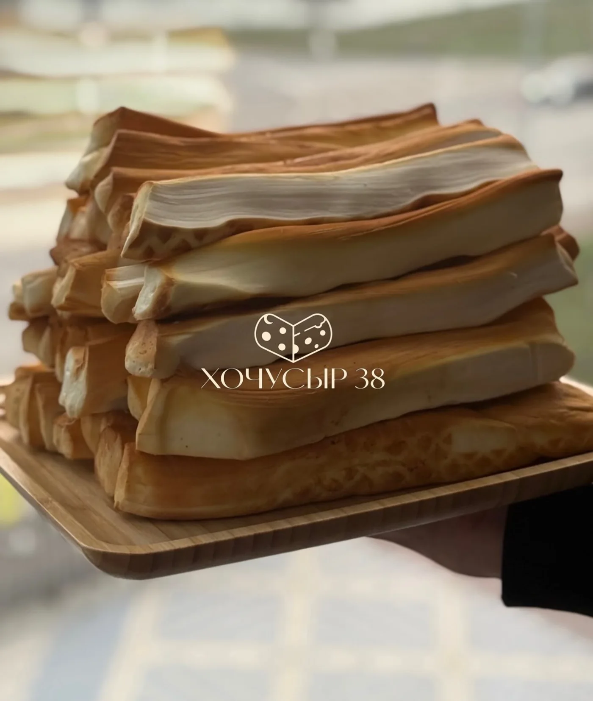

Утро без спешки
Хлеб, любимый напиток и сыр. Иногда завтрак хорош именно своей простотой.
Натуральный сыр из домашнего молока в Иркутске. Сливочный вкус, золотистая корочка и тот самый повод собраться за столом.
Хочу попробовать
Из молока.Знакомый молочный вкус, ради которого хочется отложить всё и поставить чайник.
Мы делаем натуральный домашний сыр из домашнего молока. Без ГМО и лишних добавок — с настоящим домашним вкусом.
Узнать, какой сыр естьМаленький цитрусовый поворот в вашей сырной истории.
Попробуйте кусочек сам по себе. А следующий — с каплей лайма. Какой вариант ваш?
Вкусно начать с любопытства.
Выберите повод — соберём начало сообщения для заказа.
Рассмотрите поближе. Именно так выглядит желание отрезать ещё.
Золотистая поверхность, нежная середина, молочный аромат. Посмотрите на наш сыр поближе — и выберите свой повод попробовать.
Спросить о составеХлеб, любимый напиток и сыр. Иногда завтрак хорош именно своей простотой.
Нарежьте сыр, добавьте фрукты и позовите тех, с кем всегда есть о чём поговорить.
Когда хочется принести к столу что-то вкусное. Возможность собрать заказ в подарок уточните у нас.
Расскажите, на какой случай выбираете сыр и сколько человек планируете угостить.
Обсудим актуальное наличие, состав, вес и стоимость выбранного сыра.
Способ, место и время получения подтвердим лично в переписке.
Напишите в Direct @hochu_syr38. Уточните, какой сыр хотите попробовать: актуальные варианты, вес и стоимость подтвердим до заказа.
Из домашнего молока. Точный состав выбранного сыра уточняйте перед покупкой, особенно если есть ограничения в питании. Сыр содержит молоко.
Расскажите, кому и к какой дате нужен подарок. Возможность комплектации и оформления согласуем в переписке.
Следуйте условиям хранения и сроку годности на упаковке. Если информация непонятна, уточните её у нас перед покупкой.
Доступный способ получения, адрес и возможную стоимость доставки уточните при заказе.
Актуальные контакты Telegram, MAX и телефон можно запросить в Instagram. Здесь указан подтверждённый профиль производителя.
Натуральный домашний сыр в Иркутске.
Выбирайте повод — о сыре поговорим в Direct.
@hochu_syr38 · Иркутск
Телефон · TG · MAX — уточнить в Direct